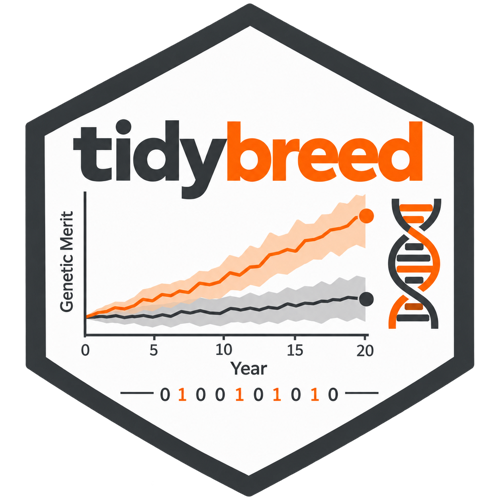

Define additive, dominance and epistatic QTL effects calibrated to targets
Source:R/define_genome_effects.R
define_genome_effects.RdSelects QTL from a filtered genome_meta table, samples additive,
dominance and additive-by-additive (A x A) effects, and calibrates them
so that the stored targets G_A, G_D and G_AA are delivered exactly
under a named anchor. Writes them under the reserved effect owner
"generated", replacing the traits' whole generated model. The
non-additive sibling of define_additive_effects(): the same pipe subject,
target rules, base resolution and owner.
Use define_additive_effects() for line-scoped or parent-of-origin
additive models (crossbreeding variants); use this function when dominance
or epistasis may be part of the model. With an additive-only target the two
write identical rows for the same seed.
Usage
define_genome_effects(
tbl,
trait_name,
G_A = NULL,
G_D = NULL,
G_AA = NULL,
trait_var_comp_tbl = NULL,
pairs = NULL,
n_pairs = NULL,
anchor = c("genic", "realised"),
dominance_degree_mean = 0.19,
dominance_degree_sd = 0.097,
inbreeding_depression = NULL,
base_tbl = NULL,
warn_bounds = c(0.8, 1.25),
seed = NULL
)Arguments
- tbl
A
tidybreed_tablefromget_table()("genome_meta"), optionally filtered withdplyr::filter(). Every selected locus is a QTL of every trait in the call (one shared QTL set), and A x A pairs are drawn or checked within it.- trait_name
Character vector of existing traits (from
define_trait()). With two or more, the architectures are drawn jointly and each target is ak x kmatrix across them; the call calibrates the traits together, so a stored block that pairs one of them with a trait outside the call is refused.- G_A, G_D, G_AA
Optional targets for the
additive,dominanceandadditive_by_additiveblocks: a symmetric positive-semidefinitek x kmatrix with dimnames intrait_nameorder (or unnamed, taken in that order), or a single number when there is one trait. A passed block is written totrait_var_compwith the effects, and is refused if that block is already stored for any of the traits.NULL(default) reads the block from storage, and leaves it out of the model when none is stored. An additive block is required; see Targets.- trait_var_comp_tbl
Optional filtered
get_table(pop, "trait_var_comp"): the stored rows to use for the blocks not passed, e.g.filter(effect_name != "dominance")to leave a stored dominance target out of this model.NULL(default) reads the stored population-wide rows.- pairs
Optional data frame with columns
locus_name_1andlocus_name_2: your own A x A design, one row per interacting pair of selected loci. Needs anadditive_by_additivetarget; not withn_pairs. See Pairs.- n_pairs
Optional whole number,
1tofloor(m / 2)formselected loci: how many random disjoint pairs to draw.NULL(default, withpairs = NULL) pairs every QTL once. Needs anadditive_by_additivetarget.- anchor
"genic"(default) or"realised": the reference population the targets are exact for. See Details.- dominance_degree_mean, dominance_degree_sd
Shape of the dominance architecture: each QTL's dominance effect is drawn as
d = h |a|, with degreeh ~ N(mean, sd)andaits sampled additive effect, before calibration rescales the dominance effects toG_D. A positive mean makes most heterozygotes better than the homozygote average, so the model has inbreeding depression. Defaults0.19and0.097. Used only with a non-zero dominance target; both0is refused.- inbreeding_depression
Optional numeric vector named by trait, e.g.
c(ADG = 1.2): the drop in the trait mean per unit of inbreedingF(positive = depression) to build in. For each named trait it replacesdominance_degree_meanwith the value that delivers it; traits not named keepdominance_degree_mean. Needs a non-zero dominance target anddominance_degree_sd > 0. See Inbreeding depression.- base_tbl
Optional
tidybreed_tablefromget_table()(optionally filtered) whose allele frequencies are the base: the founder pool (founder_haplotypes), allele copies (ind_haplotype) or individuals (any table withid_ind). The base frequencies centre the effects and set the genic anchor.NULL(default) uses the whole founder table. Required underanchor = "realised", where it must select individuals.- warn_bounds
c(lower, upper)with0 < lower <= upper: after calibration the delivered blocks are compared with another population's view (see Details), and a ratio outside the bounds warns. Defaultc(0.8, 1.25);NULLturns the comparison off.- seed
Optional integer, applied with
set.seed()immediately before the draw, after every input check and after each block's anchor feasibility check, so those refusals never touch the RNG. A failure that depends on the draw itself – the drawn architecture's rank, the additive floor, or a calibration that fails verification – comes after the seed and has consumed RNG draws.NULL(default) draws from the current stream, so a precedingset.seed()reproduces the call too.
Value
The tidybreed_pop, invisibly. The effects are written to the
genome_effects tables under the owner "generated", and any passed
target to trait_var_comp. Run add_tgv() to evaluate them.
Details
The model. In functional coding the genotypic value is
g = sum_j a_j (x_j - 1) + sum_j d_j 1[x_j = 1] + sum_(k,l) e_kl (x_k - 1)(x_l - 1), x the dosage of allele 1. Its exact
statistical (NOIA) re-expression has additive effects
alpha_j = a_j + b_j d_j + sum_l e_jl c_l (c_l = 2 p_l - 1), dominance
effects d and A x A effects e. The three targets are covariances of
those three components.
When the result is exact. Every present block (G_A, and G_D /
G_AA when present) is delivered under the named anchor to a relative
tolerance of 1e-8 on the correlation scale. That is checked, never
assumed: a calibration that misses it is an error before anything is
written.
How. Highest order first: the A x A architecture is calibrated to
G_AA; the dominance architecture, d = h |a| with dominance degrees
h ~ N(dominance_degree_mean, dominance_degree_sd), is calibrated to
G_D; then, with the coupling b d + sum e c the first two induce now
fixed, the additive architecture is solved so the statistical additive
effects deliver G_A. Each stage is a k x k right factor of its drawn
architecture, so the same seed gives the same architecture.
The additive floor. Dominance and epistasis already induce additive
variance (b d and e c are part of alpha). Part of it the additive
architecture can cancel, part it cannot; G_A below what it cannot cancel
is refused, and the error names that minimum per trait. The floor belongs
to the sampled architecture, not to G_D / G_AA alone: another seed
gives another floor, and with every base frequency at 0.5 under
"genic" it is zero however large G_D is.
The anchor is the reference covariance the calibration is exact for:
"genic"(default): the random-mating (HWE + linkage-equilibrium) limit at the base allele frequencies. Use it for multi-generation studies."realised": the covariances of the individualsbase_tblselects, linkage disequilibrium included.extract_genetic_variance()(anchor = "realised")on the same individuals gives each target block back. The blocks need not be uncorrelated in that cohort, so its total variance also carries abetween_componentscovariance. The effects are still stored with HWE-referenced contrasts centred at the base frequencies, so the storedadditive/dominancecomponents ofind_tgvare not the cohort's own split; each individual's total genetic value is the same either way.base_tblmust select individuals with complete genotypes, and the in-memory design arrays have a size limit.
Under linkage disequilibrium the additive component of a realised cohort
is a contrast component, not a joint regression: calibration is exact for
the anchor and nothing more.
After calibration the delivered blocks are compared with what another
population sees: the genic limit under "realised"; the base individuals'
own covariances under "genic" when base_tbl selects individuals; the
founder pool's expectation of the additive block only (dominance and A x A
would need the pool's multi-locus LD). A departure outside warn_bounds
warns (the pool comparison is a message). Nothing is stored.
Targets
Each block (additive, dominance, additive_by_additive) comes from
exactly one source:
a passed matrix (
G_A,G_D,G_AA; a number for one trait), written totrait_var_compin the same transaction as the effects. It is refused when that block is already stored for any of the traits, even as an identical matrix, and whether or nottrait_var_comp_tblshows it;otherwise the rows of
trait_var_comp_tbl(a filteredget_table(pop, "trait_var_comp")), or, when it isNULL, the stored population-wide rows.
A block that comes from neither is absent from the model; a zero matrix
is an explicit exact zero, and writes no terms. An additive block is
required. A model with no non-zero dominance or A x A block takes the
additive-only route: the same draw, calibration and rows as
define_additive_effects(). To add a block later, store or pass it and
re-run: the additive architecture draw is unchanged by the new block (same
seed).
Non-zero dominance or A x A targets need a positive-definite G_A: this
release solves the additive stage for a full-rank factor. A correlation of
+/-1 or a zero additive variance is accepted for additive-only models.
Singular targets are reported with a message, since a typed 1 meant as
0.99 looks the same.
Pairs
A x A acts on pairs of QTL, used only with an additive_by_additive block:
pairs, a data framelocus_name_1,locus_name_2: your design. A locus may appear in several pairs (a hub gene); unknown loci, loci outside the filter, self-pairs and repeated pairs (in either order) are errors.pairs = NULL: a random matching, each QTL in at most one pair, as AlphaSimR does.n_pairs = NULLpairs every QTL once (floor(m / 2)pairs), and a message says so.
Within a pair the loci are ordered by name (C locale), and pairs are written sorted by locus id, so the stored order does not depend on the draw.
Crossbreeding and scope
Effects are common to every line (no line_name or parent_origin; line
or parent-specific non-additive effects are a later release). Common
effects still give heterosis, through allele-frequency differences between
lines. The default base pools the founder table, so the targets then hold
at the pooled frequencies (with a Wahlund warning); pass base_tbl to
calibrate on one reference line.
What a re-run replaces
Every "generated" term of the traits, at every scope: line-scoped
additive variants from define_additive_effects() included (the message
counts them). Terms of other owners are untouched. Afterwards
define_additive_effects() refuses these traits while their generated
model has dominance or A x A terms; re-run this function with an
additive-only target, or use remove_generated_effects().
Generated means calibrated
There is no option to write fixed or unscaled effects. Exact coefficients
go through define_genome_effect_terms() with ad_terms() /
aa_terms() under a user owner, for example:
pop |>
define_genome_effect_terms(
trait_name = "ADG",
terms = rbind(
ad_terms(locus_name = c("Locus_10", "Locus_44"),
a = c(0.30, -0.12), d = c(0.10, 0.05), p = c(0.35, 0.60),
coding = "functional"),
aa_terms(locus_name_1 = "Locus_10", locus_name_2 = "Locus_44",
e = 0.08, p_1 = 0.35, p_2 = 0.60, coding = "functional")))Inbreeding depression
inbreeding_depression (the drop in the mean per unit of inbreeding F,
positive = depression, sum 2pq d) sets each named trait's mean
dominance degree. It is exact for one trait. With several traits each
requested trait's mean is solved as if it stood alone, and the joint
calibration then mixes the columns, so the delivered depression is
approximate, with no closeness guarantee; a message gives requested and
delivered values. It is not stored.
See also
define_additive_effects() for line-specific or imprinted
additive effects; extract_genetic_variance() to measure what a
population has; define_effect_cov_matrix() to store a target first;
define_genome_effect_terms(), ad_terms() and aa_terms() for known
coefficients; remove_generated_effects().
Examples
# A small in-memory population
set.seed(1)
pop <- open_pop(pop_name = "dge_example", db_name = ":memory:") |>
define_genome(n_loci = 200, n_chr = 2, chr_len_Mb = 100) |>
define_founder_haplotypes(n_haplotypes = 200)
#> duckdb keeps downloaded extensions and secrets in a temporary directory:
#> ℹ /tmp/RtmplKq43k/duckdb
#> This is removed when the R session ends.
#> • Extensions are re-downloaded each session.
#> • Secrets are lost.
#> ℹ Run duckdb(shared_home = TRUE) (or create ~/.duckdb) to keep them (suitable for most users).
#> ℹ Run duckdb(shared_home = FALSE) to accept the temporary directory (and silence this message).
#> ℹ See ?duckdb_storage for details and alternatives.
#> Opened in-memory population 'dge_example'
#> Defined genome: 200 loci across 2 chromosomes | chr lengths (Mb): all equal to 100 Mb
#> Tables written: genome_meta, genome_map, ind_haplotype, ind_genotype, ind_crossover, chr_inheritance, chr_recombination, genome_effects, genome_effect_members, genome_effect_member_origins
#> Views created: genome_effect_terms, genome_effect_loci
#> Generating 200 founder haplotypes (method = "uniform")...
#> Created founder_haplotypes (200 haplotypes x 200 loci)
pop <- pop |>
get_table("founder_haplotypes") |>
add_founders(n_males = 50, n_females = 50, line_name = "A")
#> Added 100 founders (50 males, 50 females) to line 'A'
for (t in c("ADG", "BF", "WW", "LS", "FI", "IMF")) pop <- define_trait(pop, t)
#> Added trait 'ADG'.
#> Added trait 'BF'.
#> Added trait 'WW'.
#> Added trait 'LS'.
#> Added trait 'FI'.
#> Added trait 'IMF'.
# Additive, dominance and A x A targets for one trait, QTL on chromosome 1.
# The targets are written to trait_var_comp with the effects; the A x A
# pairs are a random matching of the QTL.
pop <- pop |>
get_table("genome_meta") |>
dplyr::filter(chr_name == "1") |>
define_genome_effects("ADG", G_A = 0.3, G_D = 0.1, G_AA = 0.05,
seed = 21)
#> Drew 50 random A x A pairs: every QTL paired once (floor(100 / 2)), as AlphaSimR does. Pass n_pairs for fewer pairs, or pairs for a chosen design (a locus may then appear in several pairs).
#> Set genome effects for 100 QTL and 50 pairs on trait ADG (base: founder_haplotypes): exact under the genic anchor; delivered additive variance 0.3; dominance variance 0.1; additive-by-additive variance 0.05.
#> Additive floor for this sampled architecture (the least additive variance its dominance and A x A effects allow; another draw gives another floor): ADG = 0.1266. G_A - floor has smallest eigenvalue 0.578 on the correlation scale.
#> Inbreeding depression (drop in the mean per unit of F, positive = depression; sum 2pq d under the genic anchor's frequencies): implied ADG = 2.233.
#> Functional effects (sampling: dominance_degree_mean = 0.19, dominance_degree_sd = 0.097): ADG: 100 QTL with a != 0, 100 with d != 0, 50 pairs with e != 0.
#> The founder pool (pool expectation under random pairing; additive block only, dominance and additive-by-additive not compared) sees relative spectrum [0.892, 0.892] of the target (sampling LD of 200 haplotypes).
# Measure it: the genic anchor at the founder frequencies gives the
# targets back
pop |>
get_table("ind_meta") |>
extract_genetic_variance(trait_name = "ADG", anchor = "genic",
base_tbl = get_table(pop, "founder_haplotypes"))
#> Genic (HWE + linkage equilibrium) expectation at the allele frequencies of 'founder_haplotypes', an explicit base (allele copies).
#> # A tibble: 4 × 7
#> effect_name trait_name_1 trait_name_2 cov_value n_ind decomposition anchor
#> <chr> <chr> <chr> <dbl> <int> <chr> <chr>
#> 1 additive ADG ADG 0.3 100 full genic
#> 2 dominance ADG ADG 0.100 100 full genic
#> 3 additive_by_ad… ADG ADG 0.05 100 full genic
#> 4 total ADG ADG 0.45 100 full genic
# Two correlated traits with dominance, and an inbreeding depression for
# BF (approximate with several traits: a message gives the delivered value)
G_A <- matrix(c(0.3, 0.1, 0.1, 0.4), 2, 2)
G_D <- diag(c(0.08, 0.05))
pop <- pop |>
get_table("genome_meta") |>
define_genome_effects(c("BF", "WW"), G_A = G_A, G_D = G_D,
inbreeding_depression = c(BF = 1.5), seed = 22)
#> Set genome effects for 200 QTL on traits BF, WW (base: founder_haplotypes): exact under the genic anchor; delivered additive [BF,BF = 0.3; BF,WW = 0.1; WW,WW = 0.4]; dominance [BF,BF = 0.08; BF,WW = -1.43077e-17; WW,WW = 0.05].
#> Additive floor for this sampled architecture (the least additive variance its dominance and A x A effects allow; another draw gives another floor): BF = 0.02238, WW = 0.01478. G_A - floor has smallest eigenvalue 0.658 on the correlation scale.
#> Inbreeding depression (drop in the mean per unit of F, positive = depression; sum 2pq d under the genic anchor's frequencies): BF requested 1.5, delivered 1.18895. Approximate for several traits: each requested trait's degree mean is solved as if it stood alone and the joint calibration mixes the columns, so there is no closeness guarantee.
#> Functional effects (sampling: dominance_degree_mean = 0.19, dominance_degree_sd = 0.097; solved degree mean BF = 0.0574576): BF: 200 QTL with a != 0, 200 with d != 0; WW: 200 QTL with a != 0, 200 with d != 0.
#> The founder pool (pool expectation under random pairing; additive block only, dominance and additive-by-additive not compared) sees relative spectrum [0.923, 1.02] of the target (sampling LD of 200 haplotypes).
# Your own A x A design: one hub locus interacting with three others
pairs <- data.frame(locus_name_1 = "Locus_10",
locus_name_2 = c("Locus_20", "Locus_30", "Locus_40"))
pop <- pop |>
get_table("genome_meta") |>
dplyr::filter(chr_name == "1") |>
define_genome_effects("LS", G_A = 0.2, G_AA = 0.05, pairs = pairs,
seed = 23)
#> Set genome effects for 100 QTL and 3 pairs on trait LS (base: founder_haplotypes): exact under the genic anchor; delivered additive variance 0.2; additive-by-additive variance 0.05.
#> Additive floor for this sampled architecture (the least additive variance its dominance and A x A effects allow; another draw gives another floor): LS = 0.09074. G_A - floor has smallest eigenvalue 0.5463 on the correlation scale.
#> Functional effects (sampling: dominance_degree_mean = 0.19, dominance_degree_sd = 0.097): LS: 100 QTL with a != 0, 3 pairs with e != 0.
#> The founder pool (pool expectation under random pairing; additive block only, dominance and additive-by-additive not compared) sees relative spectrum [0.988, 0.988] of the target (sampling LD of 200 haplotypes).
# Additive only first, dominance added later. The stored G_A is read back,
# and with the same seed the additive architecture draw is unchanged.
pop <- pop |>
get_table("genome_meta") |>
define_genome_effects("FI", G_A = 1, seed = 24)
#> Set genome effects for 200 QTL on trait FI (base: founder_haplotypes): exact under the genic anchor; delivered additive variance 1.
#> The founder pool (pool expectation under random pairing) sees relative spectrum [1.12, 1.12] of the target (sampling LD of 200 haplotypes).
pop <- pop |> define_effect_cov_matrix("dominance", 0.2, trait_name = "FI")
#> Stored 'dominance' covariance matrix for: FI.
pop <- pop |> get_table("genome_meta") |> define_genome_effects("FI", seed = 24)
#> Replaced 200 generated terms of trait 'FI'.
#> Set genome effects for 200 QTL on trait FI (base: founder_haplotypes): exact under the genic anchor; delivered additive variance 1; dominance variance 0.2.
#> Additive floor for this sampled architecture (the least additive variance its dominance and A x A effects allow; another draw gives another floor): FI = 0.08266. G_A - floor has smallest eigenvalue 0.9173 on the correlation scale.
#> Inbreeding depression (drop in the mean per unit of F, positive = depression; sum 2pq d under the genic anchor's frequencies): implied FI = 3.95.
#> Functional effects (sampling: dominance_degree_mean = 0.19, dominance_degree_sd = 0.097): FI: 200 QTL with a != 0, 200 with d != 0.
#> The founder pool (pool expectation under random pairing; additive block only, dominance and additive-by-additive not compared) sees relative spectrum [1.11, 1.11] of the target (sampling LD of 200 haplotypes).
# Exact in the founders themselves, linkage disequilibrium included
pop <- pop |>
get_table("genome_meta") |>
dplyr::filter(chr_name == "2") |>
define_genome_effects("IMF", G_A = 0.2, G_D = 0.05, anchor = "realised",
base_tbl = get_table(pop, "ind_meta"), seed = 25)
#> Set genome effects for 100 QTL on trait IMF (base: ind_meta): exact under the realised anchor; delivered additive variance 0.2; dominance variance 0.05.
#> Additive floor for this sampled architecture (the least additive variance its dominance and A x A effects allow; another draw gives another floor): IMF = 0.01428. G_A - floor has smallest eigenvalue 0.9286 on the correlation scale.
#> Inbreeding depression (drop in the mean per unit of F, positive = depression; sum 2pq d under the realised anchor's frequencies): implied IMF = 1.484.
#> Functional effects (sampling: dominance_degree_mean = 0.19, dominance_degree_sd = 0.097): IMF: 100 QTL with a != 0, 100 with d != 0.
pop |>
get_table("ind_meta") |>
extract_genetic_variance(trait_name = "IMF")
#> Realised genetic covariances of the 100 selected individuals (frequencies and regressions are the cohort's own).
#> # A tibble: 4 × 7
#> effect_name trait_name_1 trait_name_2 cov_value n_ind decomposition anchor
#> <chr> <chr> <chr> <dbl> <int> <chr> <chr>
#> 1 additive IMF IMF 0.2 100 full reali…
#> 2 dominance IMF IMF 0.05 100 full reali…
#> 3 between_compon… IMF IMF -0.0156 100 full reali…
#> 4 total IMF IMF 0.234 100 full reali…
# Evaluate the genetic values
pop <- pop |> get_table("ind_meta") |> add_tgv(c("ADG", "IMF"))
#> Computed TGV for 100 individuals on trait 'ADG' (additive, dominance, interaction).
#> Computed TGV for 100 individuals on trait 'IMF' (additive, dominance).
close_pop(pop)